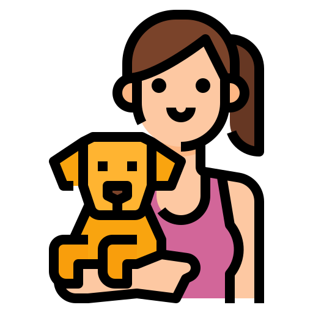
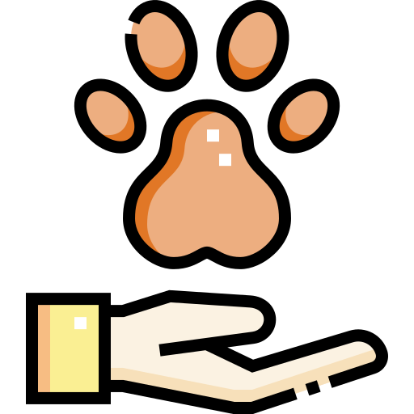

<mat-toolbar color="primary">
    <span> Creación de cuenta - Selección</span>
    <span class="example-spacer"></span>
    <button mat-icon-button routerLink="">
        <mat-icon>highlight_off</mat-icon>
    </button>
</mat-toolbar>
<div class="image">
    <h2 class="titulo">Seleccione el tipo de cuenta a crear</h2>
    <div class="body">
        <div>
            <div class="crear">
                
            </div>
        </div>
        <div>
            
        </div>

    </div>